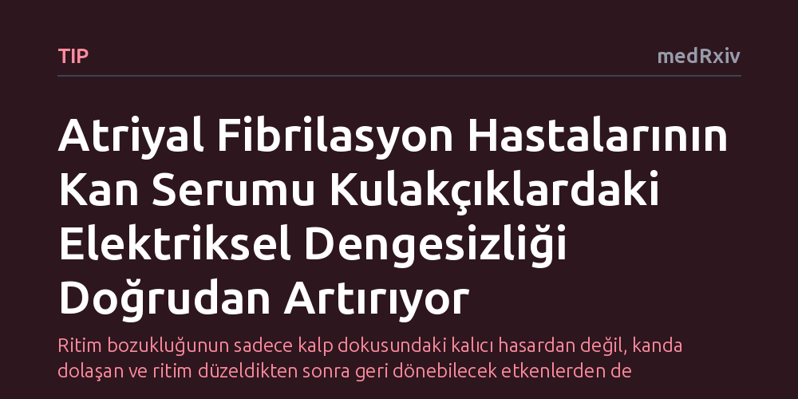

TIP · medRxiv · 2026-10-15
Araştırmacılar, atriyal fibrilasyonun kendi kendini besleyen döngüsünde kanda dolaşan faktörlerin kulakçık elektriğini doğrudan bozup bozmadığını inceledi. Ritim bozukluğu yaşayan hastaların serumunun, fare kalbinde ve insan kalp hücrelerinde elektriksel kararsızlığı ve hücresel kalsiyum düzensizliklerini akut olarak artırdığı saptandı.
Ritim bozukluğunun sadece kalp dokusundaki kalıcı hasardan değil, kanda dolaşan ve ritim düzeldikten sonra geri dönebilecek etkenlerden de kaynaklanabileceğini gösteriyor.

Atriyal fibrilasyon, kalbin kulakçık adı verilen üst odacıklarının düzenli kasılmak yerine hızlı ve kaotik şekilde titreştiği en yaygın ritim bozukluklarından biridir. Tıpta uzun süredir bilinen temel bir ilke vardır: Bu ritim bozukluğu bir kez başladığında kalbi daha da dengesizleştirir ve kendi devamını kolaylaştırır. Bugüne kadar kardiyoloji dünyası bu kısır döngüyü çoğunlukla kalp dokusunun zamanla sertleşmesi, bağ dokusunun artması ve hücrelerin elektriksel yapısının kalıcı olarak bozulmasıyla açıklıyordu.
Fakat araştırmacıların aklını kurcalayan başka bir ihtimal vardı: Ritim bozukluğu sadece dokuda yapısal hasar bırakmakla kalmayıp, bizzat kanda dolaşan bazı biyolojik habercilerin salgılanmasına da yol açıyor olabilir miydi? Başka bir deyişle, kriz anında kanda dolaşan moleküller kalp kulakçıklarını doğrudan ve hızlı bir şekilde dengesizleştirerek yangına körükle gidiyor olabilir miydi? Bu sorunun yanıtı, ritim bozukluğunun tedavi edilebilirliği açısından kritik bir fark yaratabilirdi.
Araştırma ekibi bu hipotezi test etmek için kalıcı atriyal fibrilasyon tanısı olan hastalardan kan örnekleri topladı. Deneyin en güçlü tarafı, aynı hastalardan hem ritim bozukluğu atağı sürerken hem de kontrollü elektrik şoku (kardiyoversiyon) yöntemiyle normal ritme kavuştuktan sonra kan serumu alınmasıydı. Böylece her hastanın normal ritimdeki kanı, ritim bozukluğu anındaki kanı için kusursuz bir kontrol grubu oluşturdu.
Elde edilen serum örnekleri iki gelişmiş laboratuvar modelinde incelendi. İlk aşamada serum, vücut dışına çıkarılarak yapay dolaşımla canlı tutulan izole fare kalplerine verildi ve kulakçıklarda oluşan kendiliğinden elektriksel uyarılar kaydedildi. İkinci aşamada ise uyarılmış kök hücrelerden laboratuvarda büyütülen insan kulakçık kası hücreleri kullanıldı. Bu hücrelerde mikroskobik kalsiyum geçişleri ve hücre zarı sodyum iyon akımları incelenirken, kanda hangi proteinlerin değiştiği proteomik analizlerle haritalandı.
Elde edilen sonuçlar, ritim bozukluğu anındaki kan serumunun kalp dokusu üzerinde doğrudan bozucu bir etki oluşturduğunu gösterdi. İzole fare kalplerine hastaların serumu verildiğinde, kulakçıklarda kendiliğinden ortaya çıkan anormal elektriksel uyarıların sıklığı, süresi ve toplam yükü belirgin şekilde arttı. İnsan kalp kası hücrelerinde yapılan ölçümlerde ise serumun, hücre kasılmasında kilit rol oynayan kalsiyum dalgalanmalarının genliğini azalttığı ve hücrenin uyarılmasını sağlayan tepe sodyum akımını zayıflattığı saptandı.
Proteomik taramalar, ritim bozukluğu sırasında hücreler arası bağ dokuyu yıkan MMP9 ve katepsin G gibi proteinler ile iltihap ve sinyal iletiminden sorumlu moleküllerin düzeyinde ritme bağlı değişimler olduğunu ortaya çıkardı. Daha da önemlisi, serumun hücrelerde yol açtığı bu kalsiyum bozuklukları hastanın kalbindeki kalıcı hasarın derecesiyle veya kulakçık içi basınçla ilişkili değildi. Yani hasar ne kadar ilerlemiş olursa olsun, kandaki olumsuz biyolojik sinyaller doğrudan mevcut ritim durumuna bağlı olarak değişiyordu.
Bu bulgular, atriyal fibrilasyonun kendi kendini besleme sürecinin sadece kalpteki kalıcı doku hasarıyla sınırlı olmadığını gösteriyor. Yazarların ifadesiyle çalışma, "atriyal fibrilasyonun atriyal fibrilasyonu doğurduğu kavramını dokuya özgü yeniden şekillenmenin ötesine taşıyor." Kalp normal ritmine döndürüldüğünde bu serum kaynaklı olumsuz etkinin zayıflaması, sürecin en azından bir kısmının geri çevrilebilir olabileceğine işaret ediyor.
Yine de çalışmanın laboratuvar ortamında, izole fare kalpleri ve kök hücre modellerinde gerçekleştirildiğini unutmamak gerekir. Kandaki bu karmaşık protein havuzunun hangi bileşenlerinin doğrudan hedeflenebileceği ve bu hedeflerin hasta başında klinik bir fayda sağlayıp sağlamayacağı henüz netleşmiş değildir. Ancak çalışma, kalbi normal ritimde tutmanın yalnızca kulakçık kasını dinlendirmekle kalmayıp kanda dolaşan aritmik sinyalleri de yatıştırabileceğini mekanistik olarak ortaya koyuyor.